01 / 09O que saiu esse mês pra quem produz, e o que eu achei.
Uso Ableton, então esse beta eu vou testar. Como picoto muito vocal, é a primeira parte que vou abrir.
Não curto IA dentro da DAW.
Plugin grátis eu pego sempre. Dia 27 tô de olho na Waves.
crescimento nas buscas da Splice ✶ set/25 a ago/26
Sample de disco é o meu processo também.
A Splice acha que em 2027 os produtores vão buscar estilos cada vez mais específicos, e menos “EDM”.
Quando me perguntam o que eu toco, respondo:
Comenta a letra. E salva pra lembrar do dia 27.